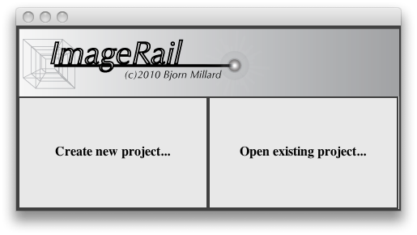
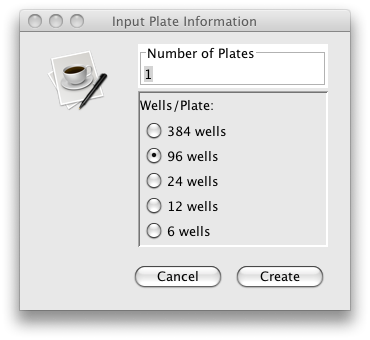
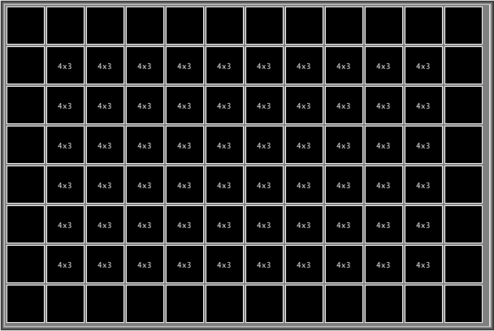

Getting Started...
(1) Launch ImageRail
(2) Create or Open an ImageRail Project
After the ImageRail splash screen goes away, the below dialog should appear.
This will let you create a new ImageRail Project or let you re-open an existing project.

Create a new project:
To create a new project, you must specify how many plates and how many wells per plate you want to initialize using the following dialog:

Open existing project
If you want to re-open an existing project, a file chooser will appear so you can select the project directory of interest.
Basic GUI Startup
Once a project has been chosen or intialized, the following interface should appear.
This is an example of a new project created with 4-96 well plates.

(3) Loading Images
To begin your analysis, the first thing you will want to do is load images into each plate.
Please refer to the images page to learn about current image format requirements.
We are actively working to make image formats more universal.
Once your images are of the right type and of the required naming convention, place each plate's images in its own file directory.
Then drag-and-drop each plate's image directory into the GUI-plate you want to load them into.
If loaded successfuly, the wells of the plate that contain images will now display a NxM
indicator where N represents the number of fields acquired and M represents the number of channels per field.
In this example, the outer wells were not used during this experiment.

The first number represents the number of different spatial fields loaded within the well and the second number represents the number of channels acquired.
Thus the total number of image files within each well is equal to: NumFields x NumChannels. In the above example we have 4 fields and 3 channels.
ImageRail is ©Copyright 2010 - Bjorn Millard